0. 项目概览
写评返券用于探索“商户自营销的离店促评”路径：商户出资，平台将充值金额转化为全平台无门槛通用券，并通过用户画像圈选在离店写评场景透出激励；用户完成评价并通过审核后发券。
流程图
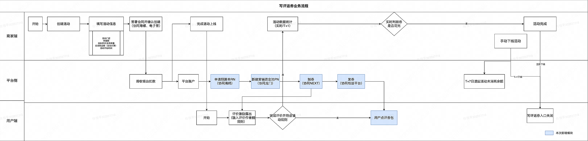
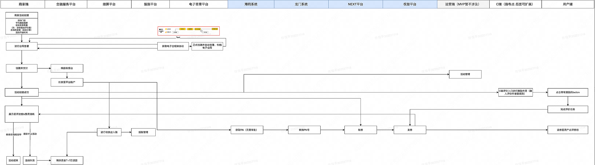
阅读提示
若关注主要负责的关键部分，可直接跳到「3.1 B 端」模块。
0.1 背景与目标
通过对“抖音评价有礼”等外部方案调研，发现离店场景促评对评价供给有显著拉动价值。与此同时，平台端评价供给出现下滑，需要在合规前提下探索更可持续的促评工具。
0.2 角色与边界
以 MVP 为目标，我的交付聚焦"能跑通、可衡量、可扩张"。本项目中，我负责了 B 端活动创建页与关键校验链路的完整设计与交付。1. 核心问题
- 评价供给下滑，店外评价增长未补齐店内评价规模下滑缺口。
- 商户促评预算外流：原本用于促评的预算转移到竞争平台或被用于其他促销。
- 商户经营结构分层明显：约 600 万境内有效美食商户中，近 2/3 的商户 30 天内无新增评价。
策略结论
用“官方合规促评工具”把预算回流到平台，并用券化方式降低财税与合规风险；通过画像圈选与频控提升预算利用效率，优先拉动低写评率用户的增量评价。这背后是平台、商户、用户三方共赢的价值主张。
2. 关键假设（MVP 需要验证）
- 以“无门槛通用券”替代返现，能够在合规可控前提下保持促评激励力度，并显著提升写评触发与完成率。
- 激励曝光覆盖到高流量离店场景，可在无需强运营下维持稳定的活动消耗与评价产出。
- 通过字数门槛、风控过滤与频控，能兼顾“评价规模”与“高质量占比”。
- 资金链路、制券与发券系统可在现有平台能力上以较小改造成本实现可规模化复用。
3. 产品方案（端到端闭环）
商户在 B 端创建活动并充值，平台将金额转化为券预算并生成动态券模板；活动开始后，在 C 端离店写评链路展示激励，用户写评达标并通过审核后即时发券；活动结束或手动下线后，未消耗预算按规则退款。
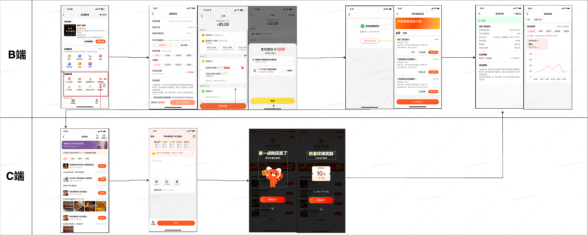
3.1 B 端：商家创建与管理活动
B 端核心是 活动创建页——让商家通过一张表单，完成促评活动的规则配置、预算设定与合规校验，把"想投促评"变成系统可执行的任务。
主要负责模块
- 入口与权限：灰度人群与城市等级控制；无权限时按钮置灰并给到原因提示。
- 创建页字段：标题、门店、时间、字数门槛、发券总量、券面额；自动计算总金额并引导商家选择合适档位。
- 关键校验：门店准入/冲突、金额上限、字数与券额联动、协议签署与支付前二次确认。
- 体验优化：默认页策略减少“空态迷路”；用“预置档位 + 联动默认值 + 强校验”提升成功率；支付前二次确认降低误配风险。
活动创建页：信息结构
创建页关键规则（梳理）
页面流程
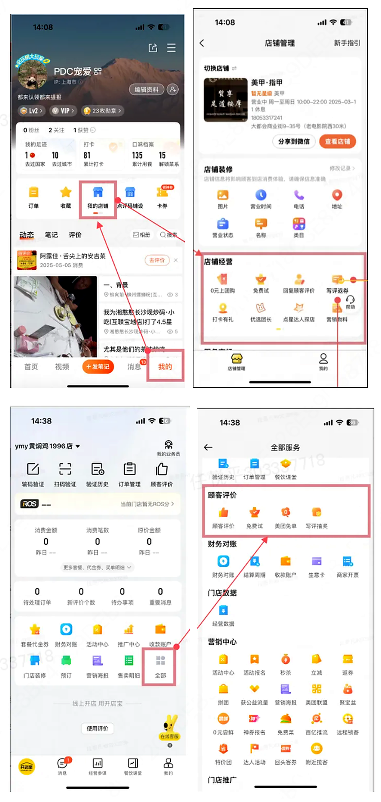
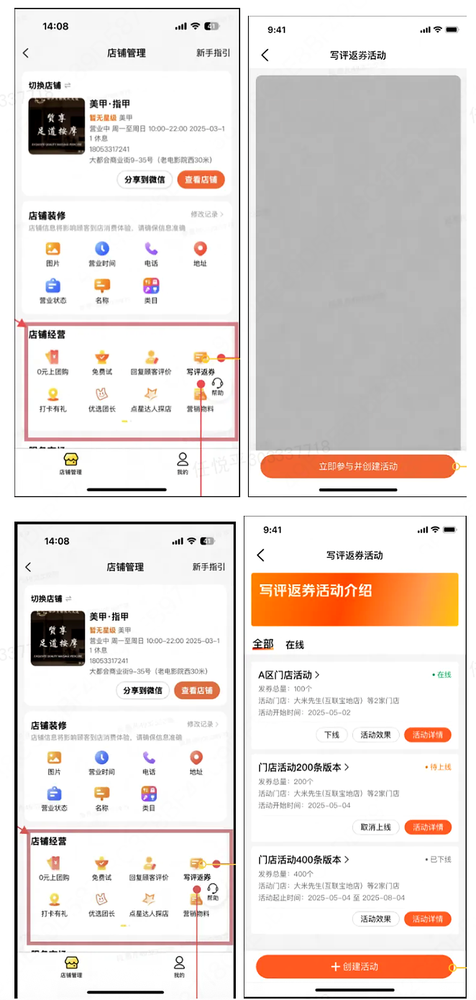
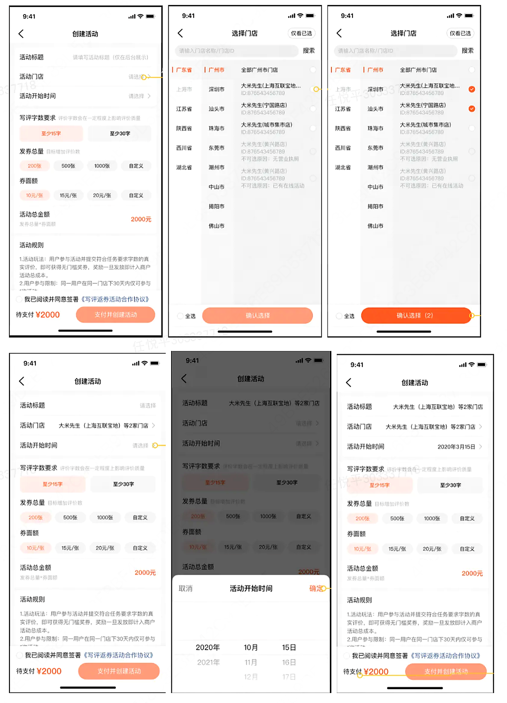
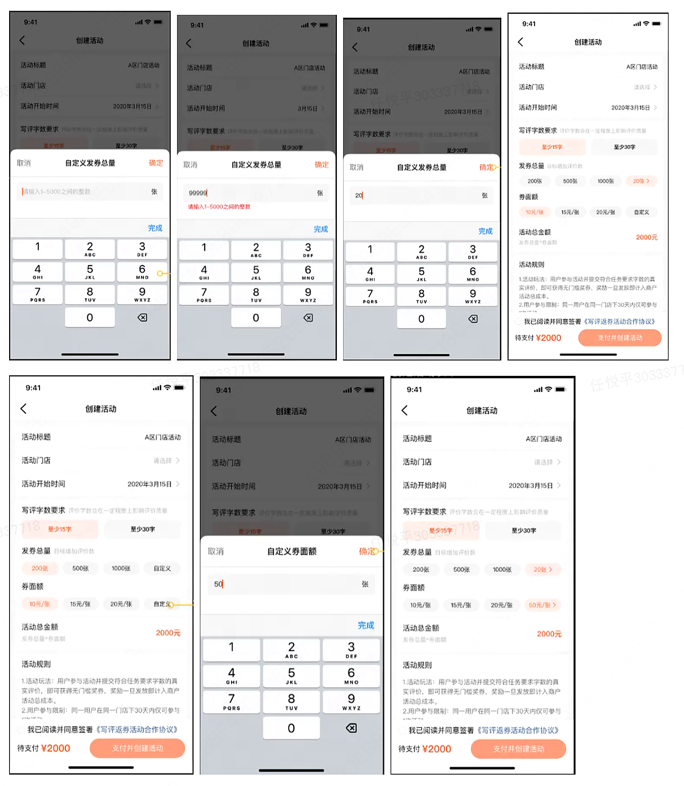
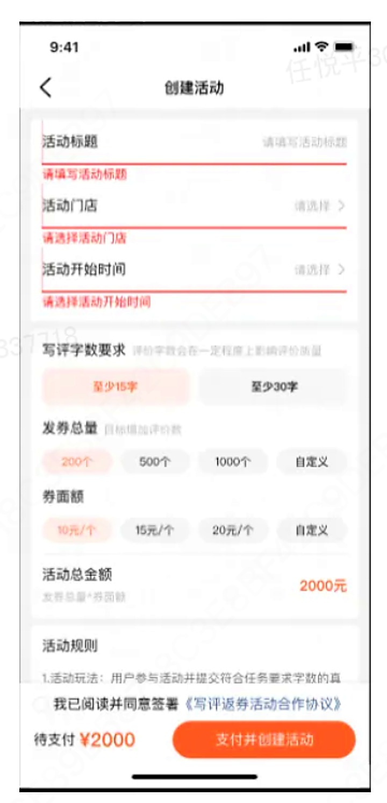
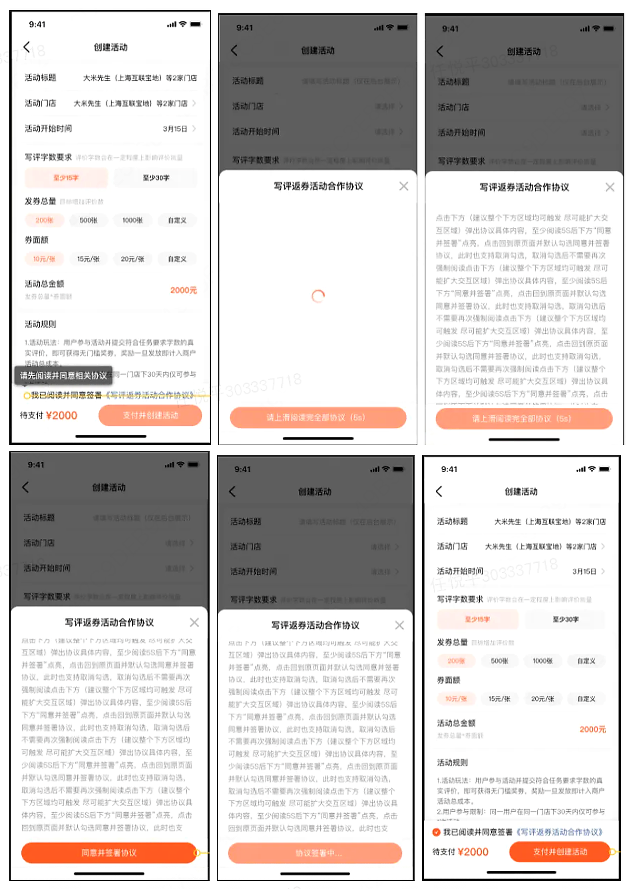
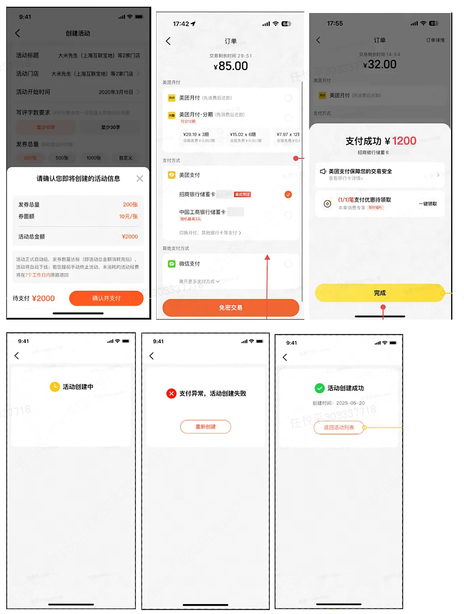
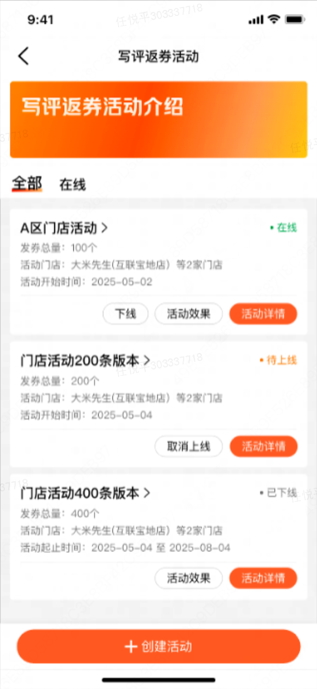
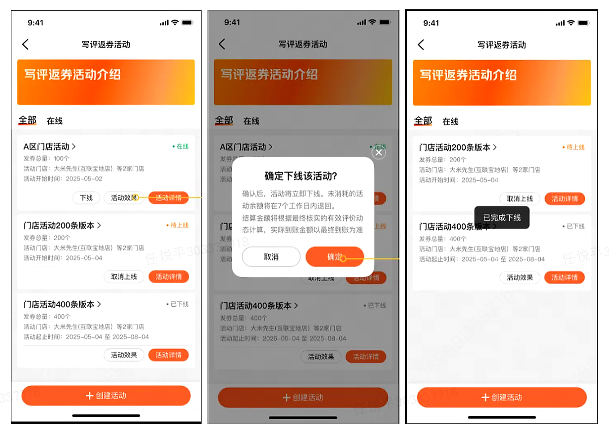
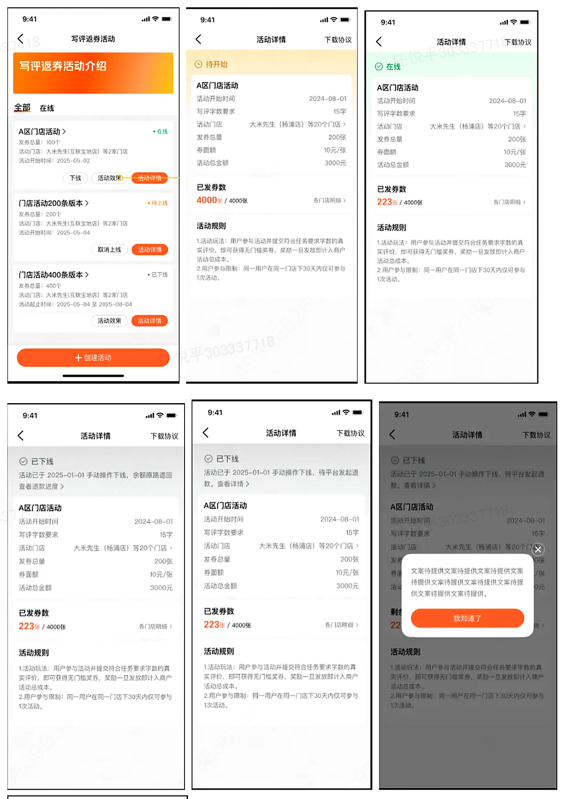
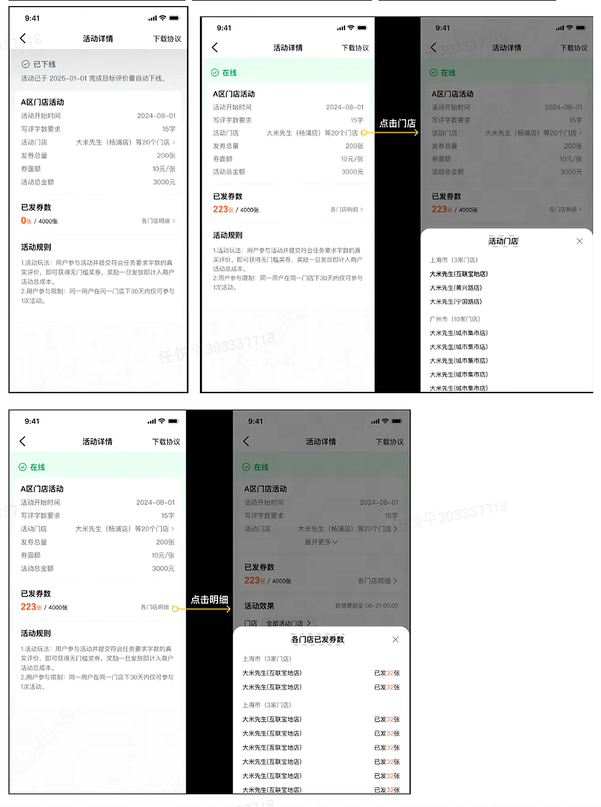

默认页策略
默认页策略减少“空态迷路”：未创建活动直达活动介绍页；已创建则直达活动列表页。创建页用“预置档位 + 联动默认值 + 强校验”提升成功率，并配合支付前二次确认降低误配与客诉风险。这背后是“让商家少输入也能配好，让系统能安全执行投放”的设计思路。
3.2 资金链路与后台制发券
MVP 的关键在于把“商户充值”可靠地变成“可发放的通用券”，并能被业务规则与投放任务消费。方案以既有平台能力为主，新增最少必要接口。
制券与预算单号
- 券业务单号（一次性手动）：向营销费用管理平台申请业务专属 PN 号长期复用。
- 制券（系统化）：商家报名充值后，实时获取门店名称、单券面额、总金额及映射关系，生成动态券模板并维护必要字段。
- 发券：权益平台基于券批次 ID 与动态字段信息按规则发放。
报账/字段拼接
这是我主责的 B 端活动创建页在资金链路上的关键下游环节——商户充值后，系统需将门店、面额、金额等信息拼接为报账单据，驱动券的生成与发放，直接影响"商户付了钱能否顺利发出券"这一核心闭环。
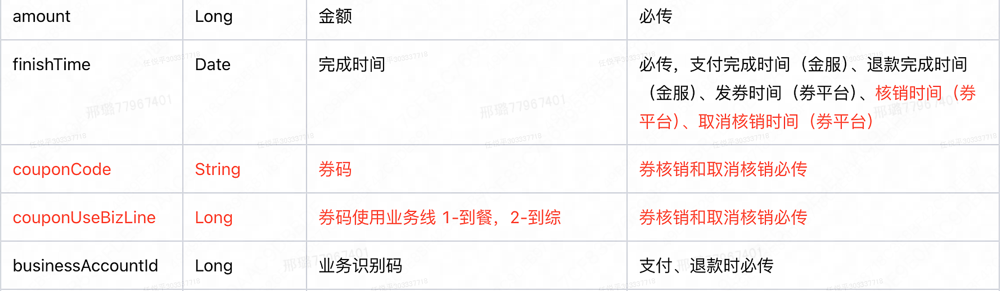
3.3 C 端：用户写评返券与使用
C 端以“任务化促评”承接：活动门店范围、字数门槛、券面额、发券数量、活动时间等参数自动生成投放任务，并在多渠道点位透出激励。
任务与风控
- 任务生效：按活动开始时间生效；商家下线活动后任务立即停止，C 端同步停止展示。
- 审核机制：评价提交后字数达标，走 3 秒实时审核；超过 3 秒未返回视为超时通过。
- 风控：高风险用户不发奖；异常兜底 24 小时内重试 3 次。
- 频控：单门店单日累计返券 ≤ 100 条（可配置）；单用户单门店 30 天内最多完成 1 次（可配置）。
激励曝光与承接
- 覆盖渠道：待评价页、订单中心、核销完成页、点餐订单页、私信消息等；文案根据字数要求与券面额自动生成。
- 写中承接：写评价页展示小橙条提示“写 X 字评价，通过审核后必得 X 元无门槛券”，可点击查看规则。
- 写后反馈：字数不足提示“再写 a 字得 X 元券”；达标后按结果展示弹窗（成功/结算中/失败）。
- 通知：发券成功后实时推送站内信，跳转到券包并默认筛选“最新获得”。
C 端关键点位
写中/写后承接
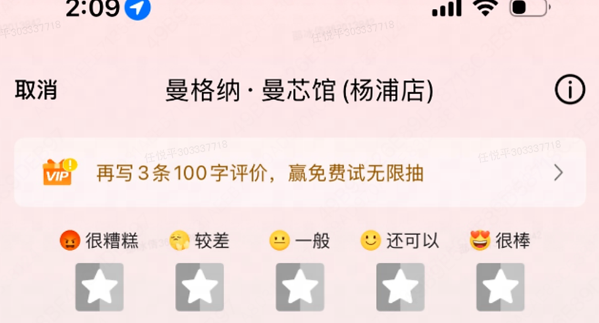
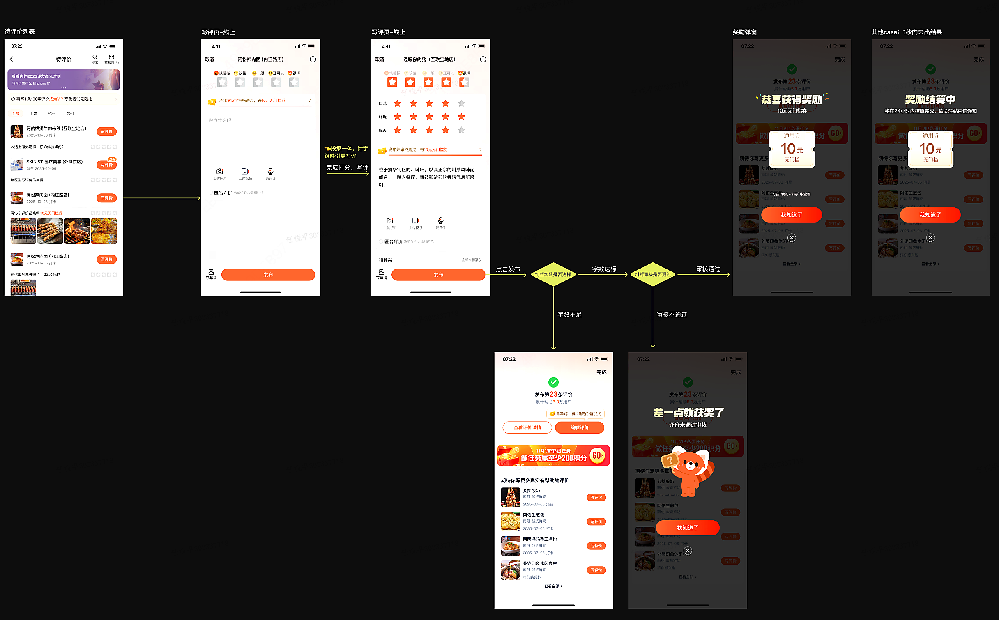
奖励弹窗
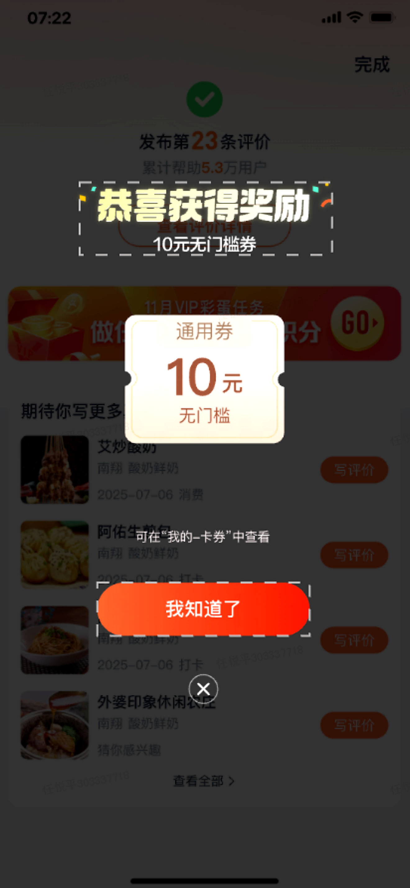
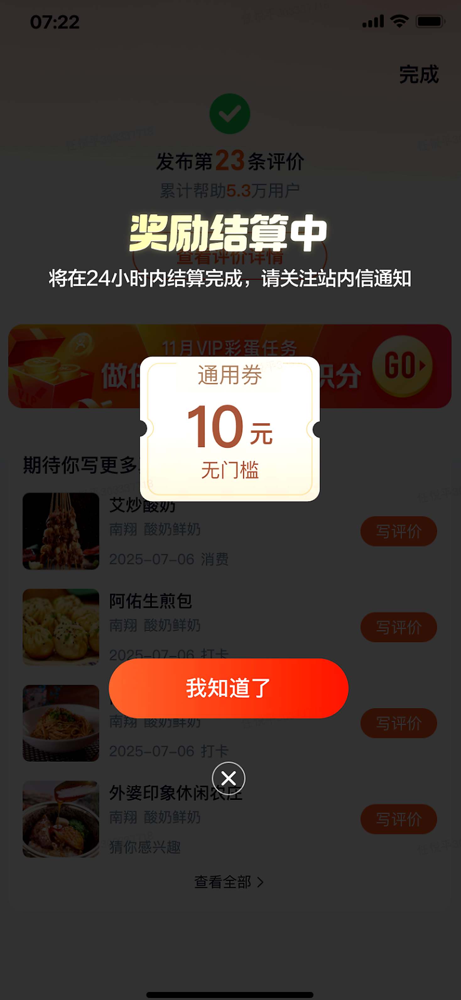
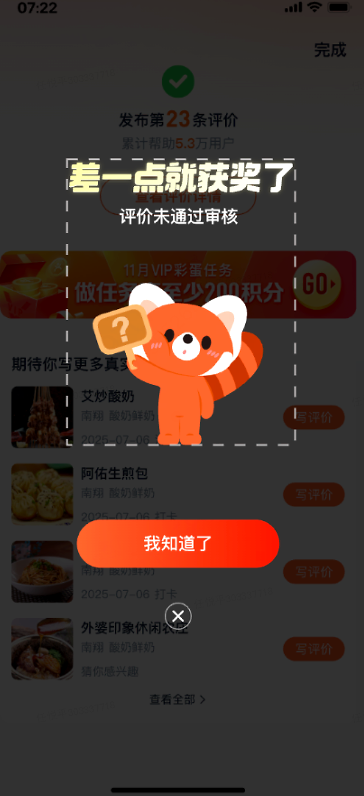
4. 埋点与衡量（让 MVP 可被证明）
指标设计原则
同时衡量"规模"（曝光、转化、发券消耗、评价量）与"质量"（高质量占比、审核失败率、风控拦截、频控触发），避免只追求消耗导致内容劣化。这体现了在业务增长中对用户体验与平台生态的平衡考量。
AI + SQL：我的数据分析方式
作为产品经理，我具备独立使用 SQL 取数分析的意识与能力。在本项目中，我借助 AI（如 ChatGPT / Copilot）辅助编写与优化 SQL 查询，快速实现双端漏斗各节点的转化率计算、门店维度的聚合分析、以及异常指标的定位排查。
具体实践：向 AI 描述业务口径和数据表结构 → AI 生成初版 SQL → 我审查逻辑并校准字段与筛选条件 → 在数据平台执行验证 → 迭代优化。这种"人定义问题、AI 加速执行"的协作模式，让我在不完全依赖数据团队排期的情况下，也能做到快速验证假设、及时发现数据异常。
5. 协同与对接（复杂度来自系统，而不是页面）
写评返券的核心难点是“资金与权益链路”跨多个平台。通过明确模块责任与关键事项，才能保证上线后资金可追溯、权益可控、客诉可处理。
| 协同平台 | 负责模块 | 关键事项 | 对接 |
|---|---|---|---|
| 海螺合同平台 | 合同签署 | 合同模板修改、签署与留档；新业务模式合规确认 | 法务 / 产品 |
| 金融服务平台 | 金融支付能力 | 收款、退款等 B 端收银台能力；新业务模式改造评估 | 支付侧 |
| 结算平台 | 结算能力 | 交易后资金清算与结算处理 | 结算侧 |
| 报账平台 | 报账能力 | 财务报账；新业务模式是否需要修改 | 财务 / 产品 |
| NEXT 平台 | 制券平台 | 动态券模板创建；制券规则与字段维护 | 制券侧 |
| 权益平台 | 发券 | 基于券批次与动态字段按规则完成发放 | 权益侧 |
| 风控平台 | 风险用户过滤 | 激励展示/发奖时过滤高风险用户与高风险商户 | 风控侧 |
6. 结果与指标（MVP 产出）
MVP 在上线后两个月、未主动运营情况下：共 102 家门店上线、覆盖 43 城市，商家充值 100,780 元；有产评门店 42 家、产评 485 条，高质量评价占比 39%；活动评价贡献占活动期间门店总产评 16%（部分门店达到 30%+）。
7. 复盘与下一步
做对了什么
把复杂问题拆成可验证的 MVP：先证明"机制有效"，再做规模化与精细化。
→ 体会到"用最小代价验证最大假设"的产品思维。
先把链路跑通并可追溯，才能谈扩点位和扩招商。
→ 认识到跨团队协作中"系统链路"比"页面交互"更重要。
字数门槛、频控、风控过滤、退款规则，让系统可控可运营。
→ 理解了产品设计中"合规与风控"是底线。
如果再做一次，我会更早补齐
商户侧 ROI 看板提前
更直接地回答商户"花了多少钱，换来多少评价与星级变化"→ 更快验证商业价值闭环。
多点位曝光做"优先级与分配"治理
减少不同激励任务之间的冲突与干扰 → 提升用户体验与预算效率。
风险与客诉 SOP 产品化
让客服/商服处理路径更短、更标准 → 让产品在规模化时更稳健。
下一步
阶段二扩城市与点位，补齐招商入口；阶段三引入更精细的用户画像调度与营销频道页，让“促评”与“交易决策”更强绑定，实现评价增长与交易拉动双目标。